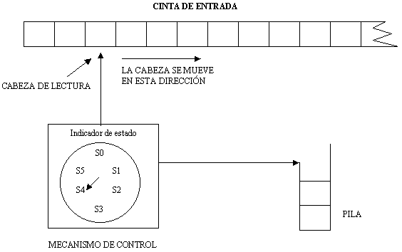
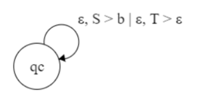
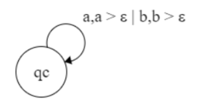
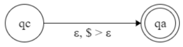

Gramáticas Libres de Contexto (GLC's)
Consiste de una colección de reglas de sustitución llamadas producciones, cada regla aparece como una línea en la gramática y comprende un símbolo y una cadena separada por una flecha, el símbolo se llama variable (representada por letras mayúsculas), la cadena consiste de variables y símbolos llamados terminales (minúsculas, símbolos especiales como diagonales, parentesis, etc). Es importante recordar que siempre hay una variable inicial.
Definición Formal
V = Conjunto finito de Variables
Σ = Conjunto finito de Terminales
R = Conjunto finito de reglas
S = Variable inicial
Autómatas de Pila (AP's)
Son como los autómatas finitos indeterministas, pero tienen un componente extra que es la pila. La pila provee un espacio de almacenamiento y permite que el autómata reconozca algunos lenguajes que no son regulares. Es importante recordar que la pila tiene la propiedad de que solo se puede sacar el elemento de hasta arriba por lo que el último en entrar es el primero en salir.
 Autómata de Pila.Definición Formal
Q = Es el conjunto finito llamado Estados
Σ = Es el conjunto finito llamado Alfabeto
𝛤 = Es el conjunto finito llamado Alfabeto de la pila
q0 = Estado inicial
δ = Función de transición, donde Q x Σε x 𝛤ε -> P(Q x 𝛤ε)
F = Conjunto de estados de aceptación
Conversión de una GLC a un AP
Un Lenguaje es libre de contexto solo si un autómata de pila lo reconoce. Sea A un LLC, por definición sabemos que A tiene una GLC “G” que lo genera. Mostraremos como convertir G en un AP “P”.
Sea P (Q,Σ,𝛤q0,δ,F) el AP que queremos construir.
Caso 1: Iniciamos la pila para que tenga el símbolo de $ y S, donde S = q0
-
Los estados de P son: qa,qi,qc donde qi es nuestro estado inicial, qa es el estado de aceptación, y qc es nuestro estado de ciclo.
-
La función de transición se define como: Caso 1: Iniciamos la pila para que contenga los símbolos $ y S, donde S es nuestra variable inicial. δ(q1,ε,ε) = {(qciclo, S$)}
Caso 2: Colocamos las transiciones del ciclo:
-
a) Cuando en la cima de la pila se encuentra una variable
δ(qc,ε,A) = {(qc, w | A -> w ∈ R)}
 -
b) Cuando en la cima de la pila hay una terminal:
δ(qc,a,a) = {(qc,ε)}
 -
c) Cuando en la cima de la pila se encuentra el símbolo de $:
δ(qc,ε,$) = {(qa,ε)}
